Runite bar
| Config name | runite_bar |
| Item id | 2363 |
| Value | 5000 gp |
| Weight | 4lb |
| Members | No |
| Tradeable | Yes |
| Stackable | No |
| Defined in | scripts/skill_smithing/configs/smelting/smelting.obj |
Runite bar
It's a bar of runite.
How to make
| Skill | Level | XP | Ingredients | Tool | How | Where | Makes |
|---|---|---|---|---|---|---|---|
| Smithing | 85 | 50.0 | interface | furnace | 1 smelting |
Used to make
| Skill | Level | XP | Ingredients | Tool | How | Where | Makes |
|---|---|---|---|---|---|---|---|
| Smithing | 85 | 75.0 | interface | anvil | 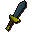 Rune dagger | ||
| Smithing | 86 | 75.0 | interface | anvil | |||
| Smithing | 87 | 75.0 | interface | anvil | 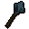 Rune mace | ||
| Smithing | 88 | 75.0 | interface | anvil | |||
| Smithing | 89 | 75.0 | interface | anvil | 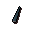 Rune dart tip ×10 | ||
| Smithing | 89 | 75.0 | interface | anvil | 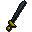 Rune sword | ||
| Smithing | 90 | 75.0 | interface | anvil | |||
| Smithing | 90 | 150.0 | interface | anvil | 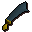 Rune scimitar | ||
| Smithing | 91 | 150.0 | interface | anvil | |||
| Smithing | 92 | 150.0 | interface | anvil | 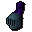 Rune full helm | ||
| Smithing | 92 | 75.0 | interface | anvil | 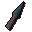 Rune knife ×5 | ||
| Smithing | 93 | 150.0 | interface | anvil | |||
| Smithing | 94 | 225.0 | interface | anvil | 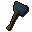 Rune warhammer | ||
| Smithing | 95 | 225.0 | interface | anvil | |||
| Smithing | 96 | 225.0 | interface | anvil | |||
| Smithing | 97 | 225.0 | interface | anvil | |||
| Smithing | 98 | 150.0 | interface | anvil | 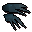 Rune claws | ||
| Smithing | 99 | 225.0 | interface | anvil | |||
| Smithing | 99 | 375.0 | interface | anvil | |||
| Smithing | 99 | 225.0 | interface | anvil | 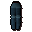 Rune platelegs | ||
| Smithing | 99 | 225.0 | interface | anvil | 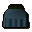 Rune plateskirt |
Dropped by
| NPC | Level | Quantity | Rarity | Via | Notes |
|---|---|---|---|---|---|
| 276 | 1 | 3/128 (2.34%) | |||
| 276 | 1 | 5/2048 (0.24%) | Ultra-rare drop table table | ||
| 227 | 1 | 5/8192 (0.06%) | Ultra-rare drop table table | ||
| 172 | 1 | 5/16384 (0.03%) | Ultra-rare drop table table | ||
| 86 | 1 | 5/16384 (0.03%) | Ultra-rare drop table table | ||
| 141 | 1 | 5/16384 (0.03%) | Ultra-rare drop table table | ||
| 141 | 1 | 5/16384 (0.03%) | Ultra-rare drop table table |
In drop tables
Referenced in scripts
scripts/_test/scripts/cheats/cheat_bank.rs2scripts/areas/area_taverly/scripts/crystal_chest.rs2scripts/areas/area_wilderness/scripts/king_black_dragon.rs2scripts/drop tables/scripts/shared_droptables.rs2scripts/skill_smithing/scripts/smithing/smithing.rs2